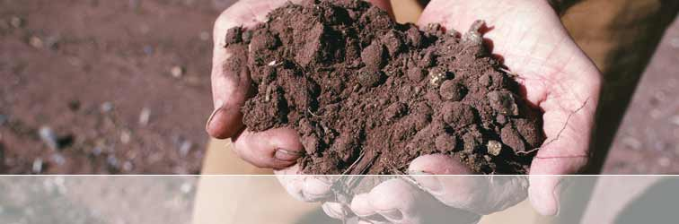
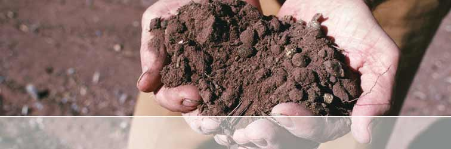

MARKETING MANAGER
Biagio graduated in 2001 from Macquarie University with a degree in Commerce and a major in Marketing. After graduation he soon found a passion for wine while on a 2 year long round the world trip visiting vineyards in Spain, Portugal, Italy and the USA.
After the completion of numerous wine qualifications as well as becoming a member of the Australian Sommeliers Association, Biagio attended International Trade Shows in New Zealand, Italy and in every major city in Australia. In 2008, he completed his Masters of Wine Business at one of the world's most prestigious wine schools of Agriculture and Wine, the University of Adelaide (Roseworthy/Waite). He was one of only 2 students selected from the Masters Program awarded the opportunity to publish his final assessment research paper.
As Marketing and Export Manager for Robertson of Clare Wines, Biagio oversees the market segments of the portfolio through the corporate and retail market both domestically and internationally as well as consolidating key client relationships.
Contact: biagio_ famularo@rocwines.com.au